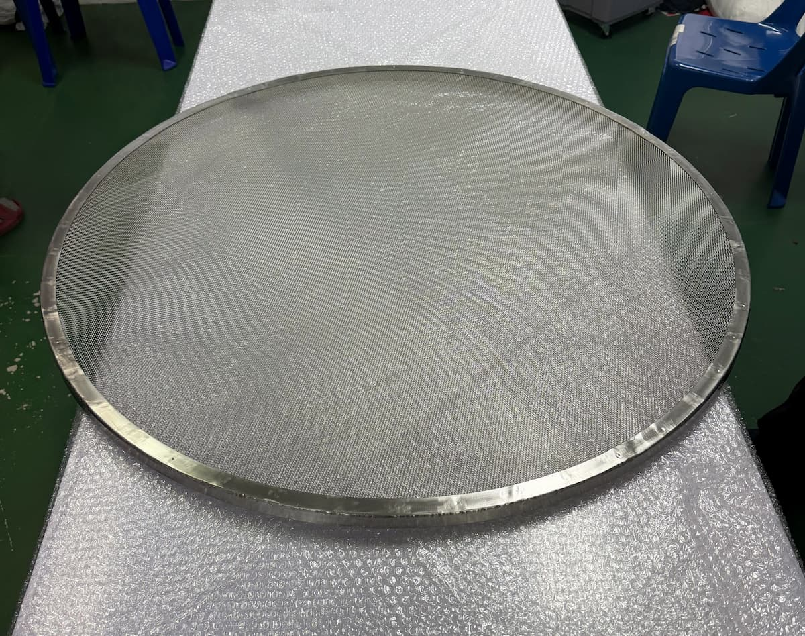

Beyond the Filter — Engineering for You
High-quality industrial filters, designed and built for your real operations — with full engineering support for factories and industrial plants.
High-quality industrial filters, designed and built to fit your operations

Multi-layer sintered wire mesh — strong, resistant to high pressure and temperature, cleanable and reusable.

Housings for filter elements, designed to match each site's pipe size and flow rate.

Installed directly in the pipeline, filtering fluids in-line within the system. Space-saving.

Catches foreign particles in the pipeline, protecting pumps and downstream equipment.

Disk filters for fine filtration, produced in multiple sizes and filtration grades.

Cylindrical cartridge filters — easy to replace, suitable for a wide range of systems.

Custom filter design and manufacturing to your drawings or samples, by our engineering team.

Other equipment and fabrication work related to industrial filtration systems. Contact sales for details.
Full-service — from manufacturing and design to installation and long-term care.
Custom-built filters
High-quality filters built to your real operational specs — engineered to fit, not off the shelf.
Industrial system design
Filtration systems designed to European hygienic standards for industrial use.
On-site installation
Professional installation of machinery and equipment — safe, on time, and to standard.
After-sales care
Ongoing maintenance and after-sales support — standing by you for the equipment's full life.
We don't just sell filters — we deliver engineering that understands your work.
Not off-the-shelf stock — designed and built for your real site conditions, matching each production line's specs.
Our team is trained in EHEDG — the European standard for hygienic design in the food industry.
A production base in Thailand — quick to respond, on-time delivery, with a team that supports you on-site.
EHEDG (European Hygienic Engineering & Design Group) is the European standard for hygienic design in the food industry. Our founder is trained to this standard and applies it as a guiding principle in the design and manufacture of every piece of work.